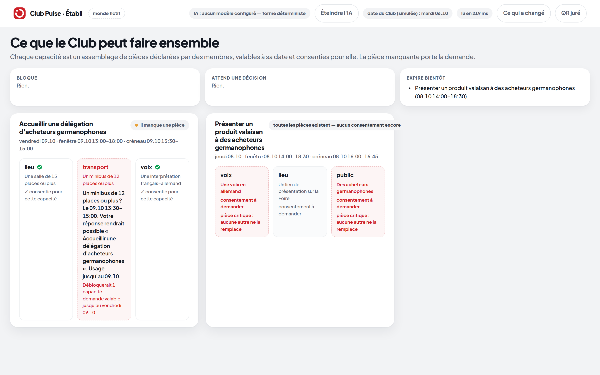
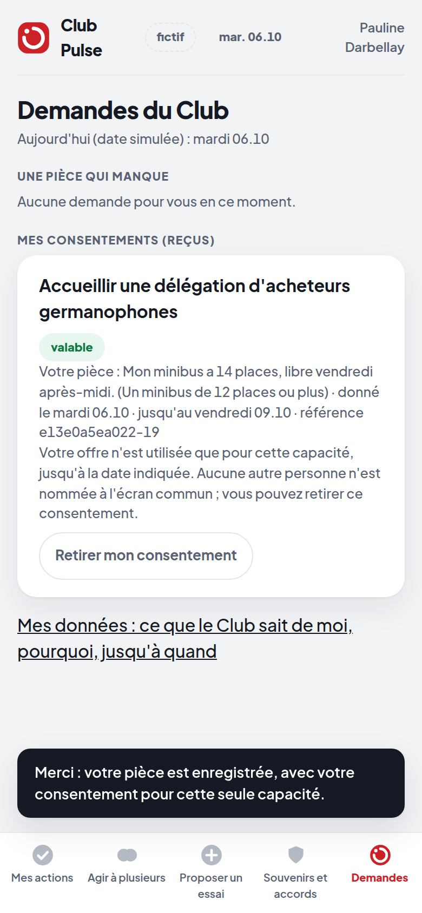

ORSIÈRES · VALAIS
Sophie
Tisanes de plantes alpines
Personnage fictif
Et après ?
Ce qui se passe
entre deux événements.
M-04
M-11
M-17
M-23
M-02
Foire du Valais
Prochain événement du Club
Oui
(pas « on s'appelle »)
L'homme qui disait oui.
Plan B · le film ne se lance pas · on vous le raconte
Jean-Marc est membre du Club depuis vingt ans. À chaque événement, quelqu'un lui demande un coup de main — un contact, une salle, un camion — et Jean-Marc dit oui. Toujours. Avec sa carte, et un « on s'appelle ».
Il a dit oui cent fois. Il a été rappelé trois fois.
Ce n'est pas Jean-Marc, le problème. C'est ce qui vient après le oui.
Et après ?
Le même geste.
Dans le vrai produit.
Il manque
une pièce.
une pièce.

etabli-1-manque.pngÉtabli — « il manque une pièce » · capture de samedi
Essai · le vrai produit, en direct
- La demande
- Ses mots
- Oui
- Le reçu
- Le retrait
- Le juré
Le Club peut
le faire.
le faire.
Ce qui est prouvé.
Rien de plus.
01
Le reçu
daté, référencé, révocable.
02
Le journal
le serveur meurt, le monde revient.
03
Le retrait
un rôle, jamais un nom.
Les chiffres du gel
data/gel.json non lu — lancer le deck avec lancer.py
L'IA propose.
Les règles vérifient.
Le membre décide.
Interrupteur. Même état du Club, IA allumée ou éteinte — testé.
data/gel.json non lu — lancer le deck avec lancer.py
Et après ?
Et après, maintenant,
il se passe quelque chose.
ORSIÈRES · VALAIS
Sophie
Tisanes de plantes alpines

tel-2-recu.pngle reçu réel · capture de samedi
La Foire crée la rencontre.
Club Pulse crée l'après.
Club Pulse crée l'après.
Club Pulse
Club des Affaires · Foire du Valais
monde de démonstration fictif · chaque affirmation : docs/audit/CLAIMS.md